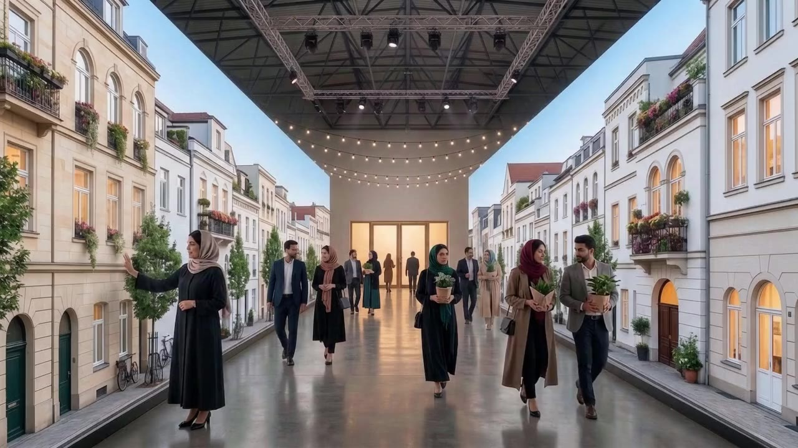

20:45
Dinner in the forest
Two doors at the side of the amphitheatre lead straight to dinner — nobody walks back into the grey street. A forest on LED, real trees, a ceiling of branches and tiny warm lights.

Part 3 of 4 20:45 – 22:00
Dinner in the forest
After the speeches, guests do not go back into the grey street: a separate route takes them to dinner, in a hall with the grandeur of a forest — a forest on LED, real trees and tables dressed with forest-style arrangements.
20:45
Two doors at the side of the amphitheatre lead straight to dinner — nobody walks back into the grey street. A forest on LED, real trees, a ceiling of branches and tiny warm lights.
2 frames. Select any frame to see it full size.
Guests then leave the amphitheatre through two doors at its side and go straight to dinner — they do not go back into the grey street. The dinner hall has the grandeur of a forest: a forest on LED, real trees and a ceiling of branches with tiny lights. On the tables, low forest-style arrangements: moss, stones, ferns and white wild flowers.

Next: part 4 of 4Life Again